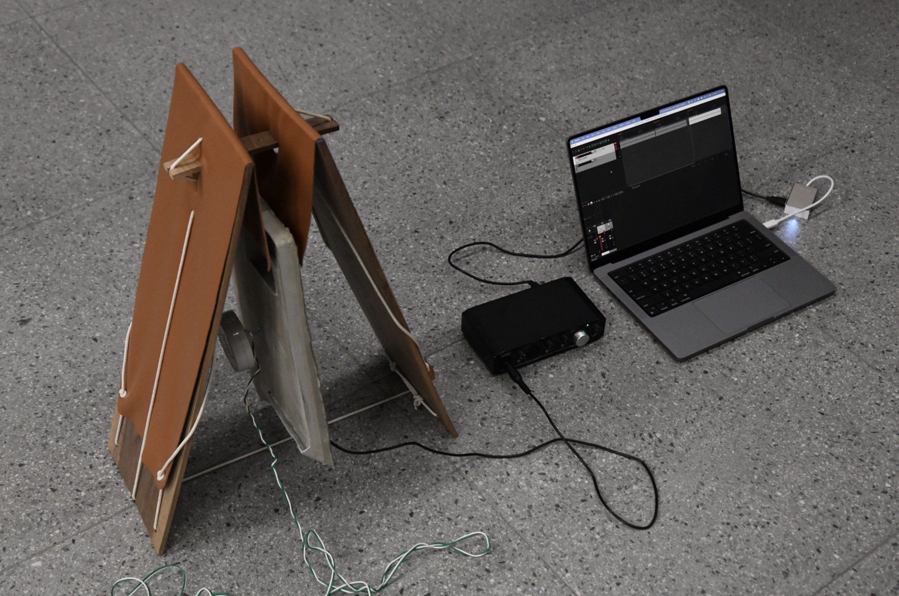
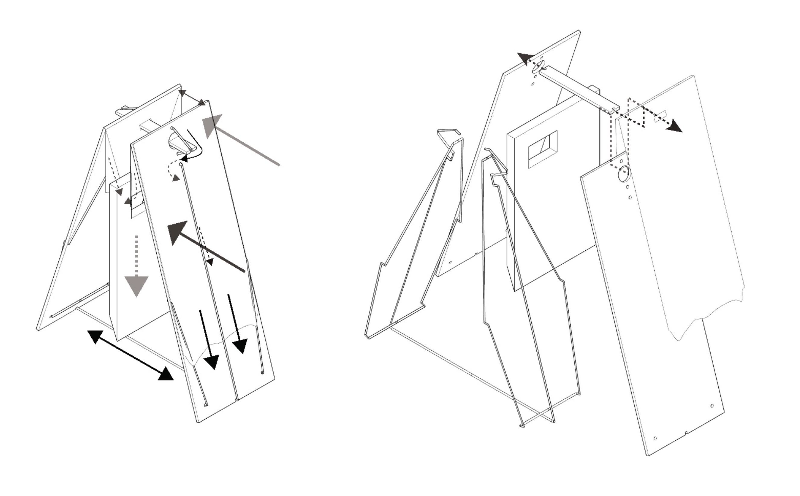

Medium: Sculpture
Year: 2023
Materials: Walnut, Leather, Concrete, Rope, Transducer, Geophon, Audio Interface, Reaper Software


The self sustaining artifact holds itself together by tectonic tension. The artifact invites an investigation of the acoustic properties of transmitting sound through concrete, resulting in new sonic material. The artifact is a ritual object, the hollow sound transmitting after the concrete is the NEW voice. This voice speaks to me and informs new works, from a new acoustic perspective.